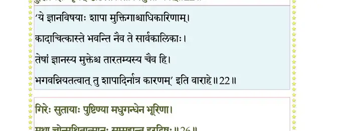
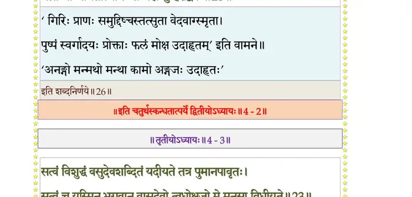

स्कन्ध 4 · अध्याय 2
श्लोक १
विदुर उवाच–
भवे शीलवतां श्रेष्ठे दक्षो दुहितृवत्सलः ।
विद्वेषमकरोत् कस्मादनादृत्यात्मजां सतीम्।। १ ।।
भवे शीलवतां श्रेष्ठे दक्षो दुहितृवत्सलः ।
विद्वेषमकरोत् कस्मादनादृत्यात्मजां सतीम्।। १ ।।
श्लोक २
कस्तं चराचरगुरुं निर्वैरं शान्तविग्रहम् ।
आत्मारामं कथं द्वेष्टि जगतो दैवतं महत्।। २ ।।
आत्मारामं कथं द्वेष्टि जगतो दैवतं महत्।। २ ।।
श्लोक ३
एतदाख्याहि मे ब्रह्मन् जामातुः श्वशुरस्य च ।
विद्वेषस्तु यतः प्राणानत्यजद् दुस्त्यजान् सती।। ३ ।।
विद्वेषस्तु यतः प्राणानत्यजद् दुस्त्यजान् सती।। ३ ।।
श्लोक ४
मैत्रेय उवाच–
पुरा विश्वसृजां सत्रे समेताः परमर्षयः ।
तथाऽमरगणाः सर्वे सानुगा मुनयोऽग्नयः।। ४ ।।
पुरा विश्वसृजां सत्रे समेताः परमर्षयः ।
तथाऽमरगणाः सर्वे सानुगा मुनयोऽग्नयः।। ४ ।।
श्लोक ५
तत्र प्रविष्टं मुनयो दृष्ट्वाऽर्कमिव रोचिषा ।
भ्राजमानं वितिमिरं कुर्वन्तं तन्महत् सदः।। ५ ।।
भ्राजमानं वितिमिरं कुर्वन्तं तन्महत् सदः।। ५ ।।
श्लोक ६
उदतिष्ठन् सदस्यास्ते स्वधिष्ण्येभ्यः सहाग्नयः ।
ऋते विरिञ्चिं शर्वं च तद्भासा क्षिप्तचेतसः।। ६ ।।
ऋते विरिञ्चिं शर्वं च तद्भासा क्षिप्तचेतसः।। ६ ।।
श्लोक ७
सदसस्पतिभिर्दक्षो भगवान् साधु सत्कृतः ।
अजं लोकगुरुं नत्वा निषसाद तदाज्ञया।। ७ ।।
अजं लोकगुरुं नत्वा निषसाद तदाज्ञया।। ७ ।।
श्लोक ८
प्राङ् निषण्णं मृडं दृष्ट्वा नामृष्यत् तदनादृतः ।
उवाच वाचं चक्षुर्भ्यामभिवीक्ष्य दहन्निव।। ८ ।।
उवाच वाचं चक्षुर्भ्यामभिवीक्ष्य दहन्निव।। ८ ।।
श्लोक ९
दक्ष उवाच–
श्रूयतां ब्रह्मर्षयो मे सहसभ्याः सहाग्नयः ।
साधूनां ब्रुवतो वृत्तं नाज्ञानान्न च मत्सरात्।। ९ ।।
श्रूयतां ब्रह्मर्षयो मे सहसभ्याः सहाग्नयः ।
साधूनां ब्रुवतो वृत्तं नाज्ञानान्न च मत्सरात्।। ९ ।।
श्लोक १०
अयं तु लोकपालानां यशोघ्नो निरपत्रपः ।
सद्भिराचरितः पन्था येन स्तब्धेन दूषितः।। १० ।।
सद्भिराचरितः पन्था येन स्तब्धेन दूषितः।। १० ।।
श्लोक ११
एष मे शिष्यतां प्राप्तो यन्मे दुहितुरग्रहीत् ।
पाणिं विप्राग्निमुखतः सावित्र्या इव साधुवत्।। ११ ।।
पाणिं विप्राग्निमुखतः सावित्र्या इव साधुवत्।। ११ ।।
श्लोक १२
गृहीत्वा मृगशावाक्ष्याः पाणिं मर्कटलोचनः ।
प्रत्युत्थानाभिवादार्हे वाचाऽप्यकृत नोचितम्।। १२ ।।
प्रत्युत्थानाभिवादार्हे वाचाऽप्यकृत नोचितम्।। १२ ।।
श्लोक १३
लुप्तक्रियायाशुचये मानिने भिन्नसेतवे ।
अनिच्छन्नप्यदां बालां शूद्रायेवोशतीं गिरम्।। १३ ।।
अनिच्छन्नप्यदां बालां शूद्रायेवोशतीं गिरम्।। १३ ।।
श्लोक १४
प्रेतावासेषु घोरेषु घोरैर्भूतगणैर्वृतः ।
अटत्युन्मत्तवन्नग्नो व्युप्तकेशो हसन् रुदन्।। १४ ।।
अटत्युन्मत्तवन्नग्नो व्युप्तकेशो हसन् रुदन्।। १४ ।।
श्लोक १५
चिताभस्मकृतस्नानः प्रेतास्थिग्रन्थिभूषणः ।
शिवापदेशो ह्यशिवो मत्तो मत्तजनप्रियः।। १५ ।।
शिवापदेशो ह्यशिवो मत्तो मत्तजनप्रियः।। १५ ।।
श्लोक १६
पतिः प्रमथभूतानां तमोमात्रात्मिकात्मनाम् ।
तस्मा उन्मादनाथाय नष्टशौचाय दुर्हृदे।। १६ ।।
तस्मा उन्मादनाथाय नष्टशौचाय दुर्हृदे।। १६ ।।
श्लोक १७
दत्ता बत मया साध्वी चोदिते परमेष्ठिना।। १७ ।।
श्लोक १८
मैत्रेय उवाच–
विनिन्द्यैवं स गिरिशमप्रतीपमवस्थितम् ।
दक्षो ह्यप उपस्पृश्य क्रुद्धः शप्तुं प्रचक्रमे।। १८ ।।
विनिन्द्यैवं स गिरिशमप्रतीपमवस्थितम् ।
दक्षो ह्यप उपस्पृश्य क्रुद्धः शप्तुं प्रचक्रमे।। १८ ।।
श्लोक १९
अयं तु देवयजन इन्द्रोपेन्द्रादिभिर्भवः ।
यज्ञभागं न लभतां देवैर्देवगणाधमः।। १९ ।।
यज्ञभागं न लभतां देवैर्देवगणाधमः।। १९ ।।
श्लोक २०
निषिध्यमानः स सदस्यमुख्यैर्दक्षो गिरित्राय विसृज्य शापम् ।
तस्माद् विनिष्क्रम्य विवृद्धमन्युर्जगाम कौरव्य निजं निकेतनम् ।। २० ।।
तस्माद् विनिष्क्रम्य विवृद्धमन्युर्जगाम कौरव्य निजं निकेतनम् ।। २० ।।
श्लोक २१
विज्ञाय शापं गिरिशानुगाग्रणीर्नन्दीश्वरो रोषकषायदूषितः ।
दक्षाय शापं विससर्ज दारुणं ये चान्वमोदंस्तदवाच्यतां द्विजाः।।२१।।
दक्षाय शापं विससर्ज दारुणं ये चान्वमोदंस्तदवाच्यतां द्विजाः।।२१।।
श्लोक २२
नन्दिरुवाच–
य एतन्मर्त्यमुद्दिश्य भगवत्यप्रतिद्रुहि ।
द्रुह्यत्यज्ञः पृथग्दृष्टिस्तत्त्वतो विमुखो भवेत्।। २२ ।।
य एतन्मर्त्यमुद्दिश्य भगवत्यप्रतिद्रुहि ।
द्रुह्यत्यज्ञः पृथग्दृष्टिस्तत्त्वतो विमुखो भवेत्।। २२ ।।
भागवततात्पर्यनिर्णय

श्लोक २३
गृहेषु कूटधर्मेषु सक्तो ग्राम्यसुखेच्छया ।
कर्मतन्त्रं वितनुताद् वेदवादविपन्नधीः।। २३ ।।
कर्मतन्त्रं वितनुताद् वेदवादविपन्नधीः।। २३ ।।
श्लोक २४
बुद्ध्या पराभिध्यायिन्या विस्मृतात्मगतिः पशुः ।
स्त्रीकामः सोऽस्तु नितरां दक्षो बस्तमुखोऽचिरात्।। २४ ।।
स्त्रीकामः सोऽस्तु नितरां दक्षो बस्तमुखोऽचिरात्।। २४ ।।
श्लोक २५
विद्याबुद्धिरविद्यायां कर्ममय्यामसावजः ।
संसरन्त्विह ये चामुमनुशर्वावमानिनम्।। २५ ।।
संसरन्त्विह ये चामुमनुशर्वावमानिनम्।। २५ ।।
श्लोक २६
गिरेः सुतायाः पुष्पिण्या मधुगन्धेन भूरिणा ।
मथ्ना चोन्मथितात्मानः संमुह्यन्तु हरद्विषः।। २६ ।।
मथ्ना चोन्मथितात्मानः संमुह्यन्तु हरद्विषः।। २६ ।।
भागवततात्पर्यनिर्णय

श्लोक २७
सर्वभक्षा द्विजा वृत्यै धृतविद्यातपोव्रताः ।
वित्तदेहेन्द्रियारामा याचका विचरन्त्विह।। २७ ।।
वित्तदेहेन्द्रियारामा याचका विचरन्त्विह।। २७ ।।
श्लोक २८
तस्यैवं वदतः शापं श्रुत्वा द्विजकुलाय वै ।
भृगुः प्रत्यसृजच्छापं ब्रह्मदण्डं दुरत्ययम्।। २८ ।।
भृगुः प्रत्यसृजच्छापं ब्रह्मदण्डं दुरत्ययम्।। २८ ।।
श्लोक २९
भृगुरुवाच–
भवव्रतधरा ये च य एतान् समनुव्रताः ।
पाखण्डिनस्ते भवन्तु सच्छास्त्रपरिपन्थिनः।। २९ ।।
भवव्रतधरा ये च य एतान् समनुव्रताः ।
पाखण्डिनस्ते भवन्तु सच्छास्त्रपरिपन्थिनः।। २९ ।।
श्लोक ३०
नष्टशौचा मूढधियो जटाभस्मास्थिधारिणः ।
विशन्तु शिवदीक्षायां यत्र दैवं सुरासवम्।। ३० ।।
विशन्तु शिवदीक्षायां यत्र दैवं सुरासवम्।। ३० ।।
श्लोक ३१
ब्रह्म च ब्राह्मणांश्चैव ये यूयं परिनिन्दथ ।
सेतुं विधारणं पुंसामतः पाखण्डमाश्रिताः।। ३१ ।।
सेतुं विधारणं पुंसामतः पाखण्डमाश्रिताः।। ३१ ।।
श्लोक ३२
एष एव हि लोकानां शिवः पन्थाः सनातनः ।
यं पूर्वे चानुसंतस्थुर्यत्प्रमाणं जनार्दनः।। ३२ ।।
यं पूर्वे चानुसंतस्थुर्यत्प्रमाणं जनार्दनः।। ३२ ।।
श्लोक ३३
तद् ब्रह्म परमं शुद्धं सतां वर्त्म सनातनम् ।
विगर्ह्य यात पाखण्डं दैवं वो भूतराट् सदा।। ३३ ।।
विगर्ह्य यात पाखण्डं दैवं वो भूतराट् सदा।। ३३ ।।
श्लोक ३४
मैत्रेय उवाच–
तस्यैवं वदतः शापं भृगोः स भगवान् भवः ।
निश्चक्राम ततः किंचिद् विमना इव सानुगः।। ३४ ।।
तस्यैवं वदतः शापं भृगोः स भगवान् भवः ।
निश्चक्राम ततः किंचिद् विमना इव सानुगः।। ३४ ।।
श्लोक ३५
तेऽपि विश्वसृजः सत्रं सहस्रपरिवत्सरान् ।
संविधाय महोत्साहाद् यत्रेज्य ऋषभो हरिः।। ३५ ।।
संविधाय महोत्साहाद् यत्रेज्य ऋषभो हरिः।। ३५ ।।
श्लोक ३६
आप्लुत्यावभृथं यत्र गङ्गा यमुनयाऽन्विता ।
विरजेनात्मना सर्वे स्वं स्वं धाम ययुस्ततः।। ३६ ।।
विरजेनात्मना सर्वे स्वं स्वं धाम ययुस्ततः।। ३६ ।।
।। इति श्रीमद्भागवते चतुर्थस्कन्धे द्वितीयोऽध्यायः ।।